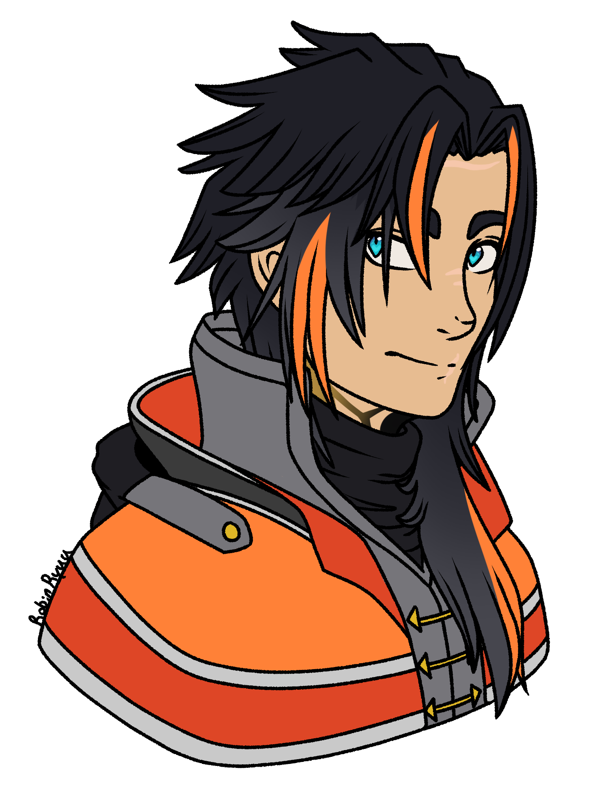

Helios is an individual of high interest in the city of Neo Eclipse. As an escaped supersoldier, he is deemed a danger to the public and to government assets. However, he's developed a rather loved reputation among the lower and middle class population, being seen as the head of the revolution, though he denies this whenever asked. After all, his motives aren't out of care for the people, but rather revenge and his own selfish desires. He is well aware of this and has tried voicing this numerous times, but eventually gave up on it when no one would listen.
Helios can come off as a very extroverted and happy personality, often cracking jokes and starting up random conversations with anyone. However, this proves to be a mask for who he really is. Due to his time with the government and in the Northern War, he faced a lot of horrible events and people, and killed many himself. He carries that with him. He chose to oppose Empyra out of revenge for what they did to him, and he's devoted and motivated to a fault. He doesn't care about collatoral damage, to people or property. Though, it should be said he's not reckless. An encounter with another supersoldier taught him this lesson the hard way, costing him his right arm.